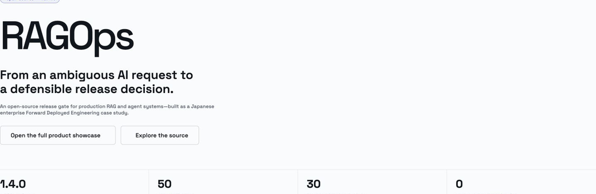
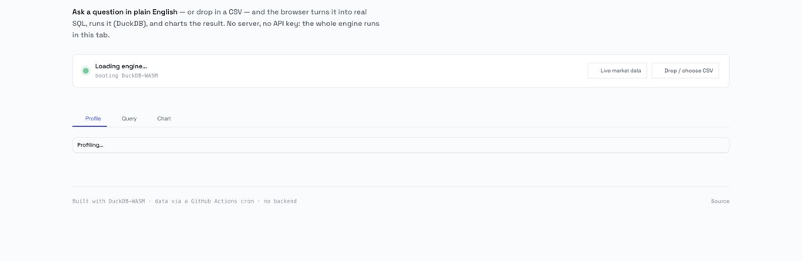
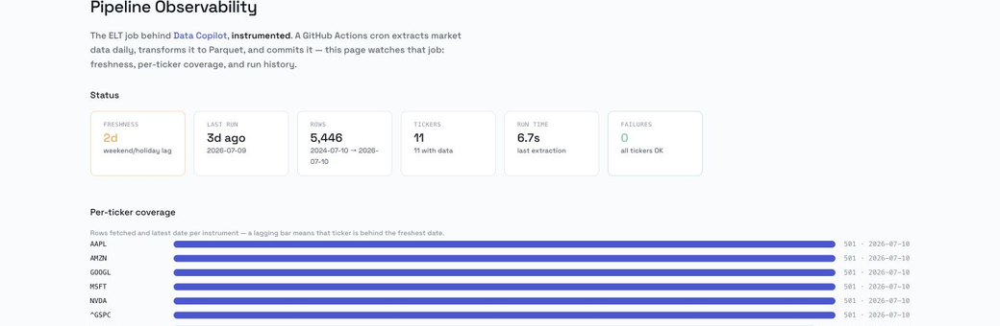
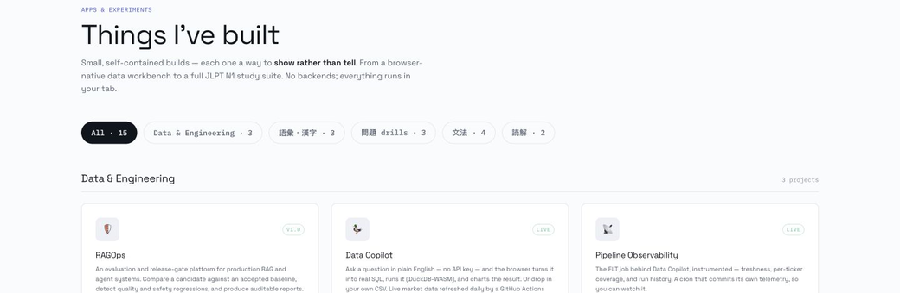

Start where the problem lives: users, data, stakeholders. Reframe the ask until the real constraint is clear.
TOKYO · FORWARD DEPLOYED ENGINEER · APPLIED AI & DATA SYSTEMS
I embed with teams to turn ambiguous problems into production systems they trust.
Thang Luu — Data & AI Engineer and Technical Lead in Tokyo. 10+ years across retail, real estate, fintech, healthcare and research. Delivery in English and Japanese.
I'd love to learn about your work.
日本語でのご連絡も歓迎します
Systems that survive production: ELT pipelines, ranking models, BI leaders actually use.
Teams of 30–50 engineers including offshore; handover that people can own and extend.
Apps
Product work that makes engineering judgment inspectable: the problem, the trade-offs, the evidence, and what remains unproven.

RAGOps
Evaluation & release-gate platform for RAG and agent systems — scenarios, regressions, red-team, trace ingestion.

Data Copilot
Plain English → real SQL on DuckDB-WASM, charted in the browser. No API key, no server.

Pipeline Observability
The ELT behind Data Copilot, fully instrumented — a cron that commits its own telemetry.

JLPT N1 study suite
The tools I built to pass N1 — kanji analysis, vocab drills, grammar, reading practice.
Swing Quant
Fail-safe quant research, walk-forward ML gates.
Proofline
Evidence-first decision memory, exact-span citations.
KakeFlow
Local-first household finance, double-entry, encrypted.
Stack
RAG · Agents · Vector search · Evals & guardrails · Context engineering
BigQuery · Treasure Data · ELT/SQL · Lake/Warehouse · Architecture
FastAPI · React/TS · Docker/CI-CD · Cloud deploy · Monitoring
Technical lead · Pre-sales · Negotiation · Offshore delivery